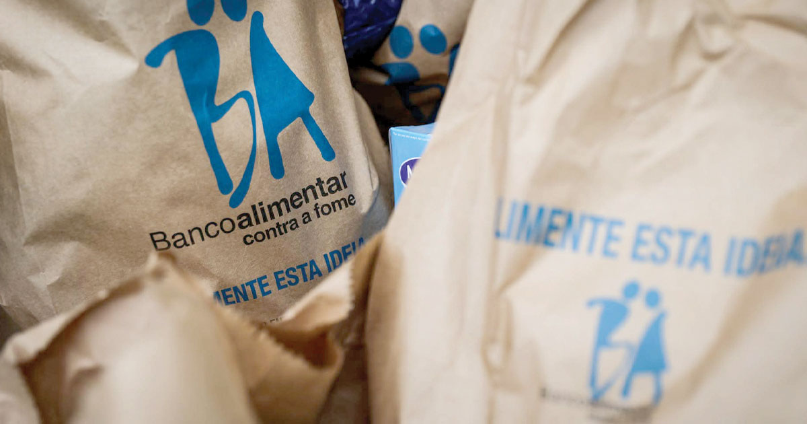

Descrição
Colaborei no Banco Alimentar com campanhas de recolha e organização de bens alimentares. Esta atividade deu-me uma perspetiva direta da importância do apoio comunitário e fortaleceu a responsabilidade social.
Competências desenvolvidas
Responsabilidade
Apoio à comunidade
Participação numa iniciativa solidária com impacto direto em famílias e instituições apoiadas.
Trabalho em equipa
Recolha e organização
Colaboração com outros voluntários na recolha, separação e organização de bens alimentares.
Consciência social
Contacto com causas reais
Compreensão mais próxima da importância da participação cívica e do voluntariado local.
Fotografias


